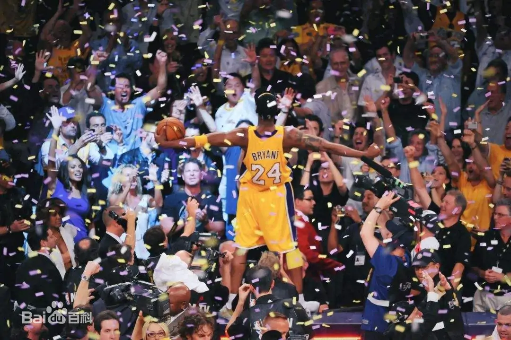

科比
科比·布莱恩特（Kobe Bryant，1978年8月23日—2020年1月26日），全名科比·比恩·布莱恩特·考克斯（Kobe Bean Bryant
Cox），出生于美国宾夕法尼亚州费城，美国已故篮球运动员，司职得分后卫/小前锋。
重要事件
- 1996年NBA选秀，科比于第1轮第13顺位被夏洛特黄蜂队选中并被交易至洛杉矶湖人队，整个NBA生涯都效力于洛杉矶湖人队；共获得5次NBA总冠军、1次NBA常规赛MVP、2次NBA总决赛MVP、4次NBA全明星赛MVP、2次NBA赛季得分王；共入选NBA全明星首发阵容18次、NBA最佳阵容15次（其中一阵11次、二阵2次、三阵2次）、NBA最佳防守阵容12次（其中一阵9次、二阵3次）。
- 2007年首次入选美国国家男子篮球队，先后帮助美国队获得了2007年美洲男篮锦标赛金牌、2008年北京奥运会男子篮球金牌和2012年伦敦奥运会男子篮球金牌。
- 2016年4月14日，科比·布莱恩特正式退役。 2017年12月19日，湖人队为科比举行球衣退役仪式。
- 2020年4月5日，科比入选奈·史密斯篮球名人纪念堂。
- 美国时间2020年1月26日（北京时间2020年1月27日），科比因直升机事故遇难，享年41岁。
国家队生涯
- 2007年，科比·布莱恩特首次入选美国国家男子篮球队，并代表美国男篮参加2007年美洲男篮锦标赛，共出战10场比赛，场均19.9分钟，得到15.3分、2.0篮板和2.9助攻，帮助美国男篮获得金牌。
- 2008年，科比·布莱恩特代表美国男篮参加了2008年北京奥运会，共出战8场比赛，场均23.5分钟，得到15.0分、2.8篮板和2.1助攻，帮助美国男篮获得金牌。
- 2012年，科比·布莱恩特代表美国男篮参加了2012年伦敦奥运会，共出战8场比赛，场均17.4分钟，得到12.1分、1.8篮板和1.2助攻，帮助美国男篮获得金牌。
- 2013年8月，科比·布莱恩特宣布退出美国国家男子篮球队。
生涯纪录
| 类别 |
最高纪录 |
备注 |
| 得分 |
81分 |
2006年1月22日对阵猛龙队 |
| 篮板 |
16个 |
2010年1月24日对阵猛龙队 |
| 助攻 |
17个 |
2015年1月15日对阵骑士队 |
| 抢断 |
7个
|
2006年2月13日对阵爵士队
|
| 盖帽 |
5个
|
1999年12月1日对阵灰熊队
|
2000年2月20日对阵76人队
2001年2月2日对阵黄蜂队
| 投篮命中数 |
28个 |
2006年1月22日对阵猛龙队 |
| 投篮出手数 |
50次 |
2016年4月14日对阵爵士队 |
| 三分球命中数 |
12个 |
2003年01月07日对超音速队 |
| 三分球出手数 |
21次 |
2016年4月14日对阵爵士队 |
| 罚球命中数 |
23个 |
2001年1月30日对阵骑士队
2006年1月31日对阵尼克斯队 |
| 罚球出手数 |
27次 |
2007年10月30日对阵火箭队
2008年3月2日对阵小牛队 |
图集

社会评价
科比是一个强有力的竞争者，他是篮球运动最伟大的球员之一，并且极具创造力。 （美国篮球运动员迈克尔·乔丹评）
科比·布莱恩特是这个星球最好的得分手。 （西班牙篮球运动员保罗·加索尔评）
科比向我们展示了，当非凡的天赋加上全心的投入，能成就怎样的可能。他是联盟历史上最杰出的球员之一。他激励人们拾起篮球、竭尽全力去拼搏的精神会最被人们铭记。他慷慨地向年轻球员们分享自己的智慧所得，并视其为使命。（NBA官方评）
科比是NBA历史第五位打了20个赛季的球员，而做到在一支球队效力20年仅他一人。在这20年中，科比是湖人的英雄，是对手眼中的“恶人”，他并非完美无缺，他同样犯过很多错误，经历过很多失败，但他一直在努力，从未放弃过。（《洛杉矶时报》评）
科比是NBA最好的得分手，突破、投篮、罚球、三分他都驾轻就熟，几乎没有进攻盲区。除了疯狂的得分外，科比的组织能力也很出众，经常担任球队进攻的第一发起人。另外科比还是联盟中最好的防守人之一，贴身防守非常具有压迫性。
（新浪网评）
作为美国国家队的一员，科比真正伟大的意义，不在于救赎了梦之队的光辉，也不在于他拥有多少金牌，而在于他作为一个时代的标志，从乔丹手中，真正接过了将篮球运动推广到全世界的旗帜，他是这项运动的标志，在一个世界范围的舞台上，诠释着篮球的魅力。
（腾讯体育评）